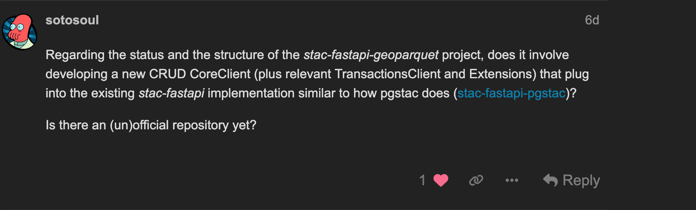

Pete Gadomski
We're building a service to search stac-geoparquet with a STAC API query.
| Format | Size |
|---|---|
| json | 21 MB |
| json.gz | 614 kB |
| parquet | 488 kB |
| parquet (compressed) | 179 kB |
1000 sentinel-2 items
Blog post, comparing w/ pgstac and elasticsearch:
Internal guidance (developmentseed/how)
stac-fastapi-geoparquet
cql2 filtering (querying) w/ DuckDB 🦆
Ideally in a way that doesn't DoS the API's, so I can just run it on a long running job and get the whole things and upload them to source.coop ;) And then CLI to point at a STAC-GeoParquet and treat it as a server (full CQL and other filters).
— Chris Holmes (@opencholmes.bsky.social) February 17, 2025 at 4:30 PM
[image or embed]
stac-geoparquet sorting/partitioning